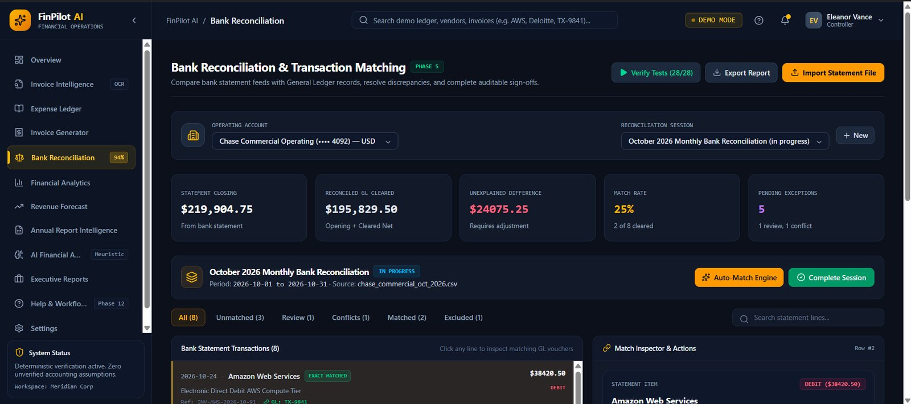
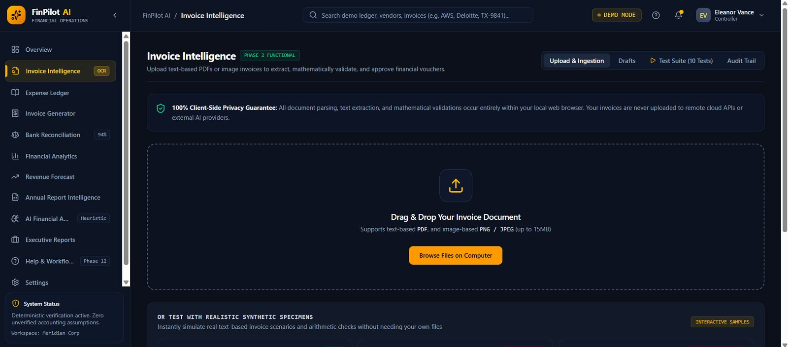
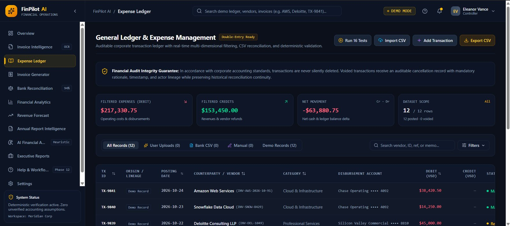
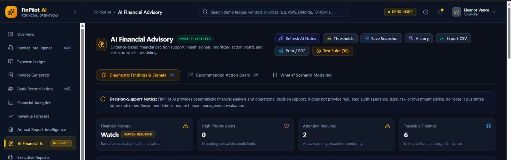
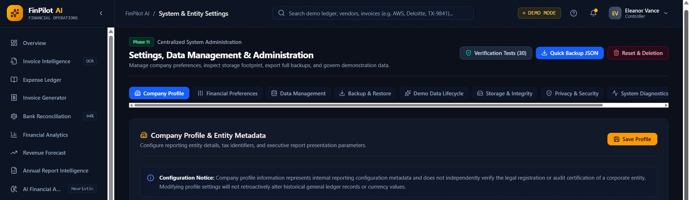
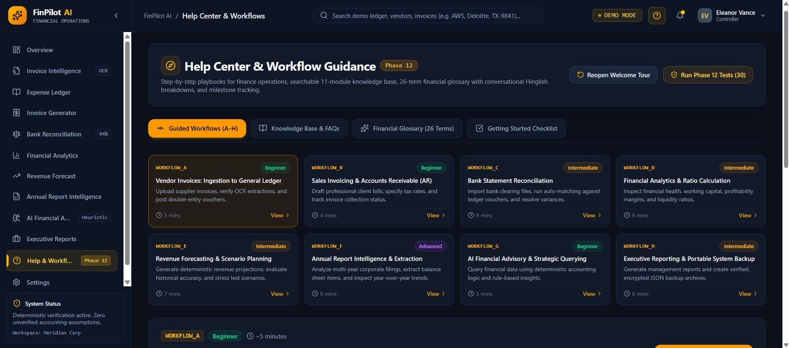

Deterministic first
Financial arithmetic is computed by code, not invented by a language model.
AI-Assisted Project · Financial Operations
An AI-assisted financial operations and accounting intelligence platform: twelve finance workflows in one guided interface.

The problem
Finance work often involves many disconnected steps and tools: extracting information from invoices, correcting uncertain fields, maintaining transaction records, tracking outgoing invoices and payments, comparing bank statements with ledger entries, monitoring performance, estimating trends, reading long annual reports and preparing management reports.
FinPilot AI brings these activities into one modular interface, to show how workflow guidance, calculations, evidence and reporting can be connected.
What it does
From an incoming vendor invoice to an executive report, with explicit review and approval steps in between.
A dashboard summarising invoices, ledger activity, reconciliation and cash-flow health.

Browser-side PDF text extraction with an OCR fallback, field review, validation, duplicate detection and explicit approval.

Transaction management with search, filters, CSV import/export and auditable cancellation instead of silent deletion.
Sales invoices with line-item and tax calculations, numbering, print-to-PDF and payment tracking, stored separately from vendor expenses.
CSV statement import, column mapping, direction-aware matching, exceptions, an explicit posting step and session lock/reopen.
Reporting periods, profitability and cash metrics, receivables ageing, customer concentration and financial ratios.
Deterministic forecasting methods, scenario planning, uncertainty ranges and backtesting (MAE, RMSE, WAPE).
Financial statement extraction with an OCR fallback, unit detection, accounting identity checks and multi-year analysis.

Deterministic advisory signals with evidence drill-down and configurable thresholds; optional Gemini narrative on top.
Seven report templates, period filters, provenance-aware figures, saved snapshots, CSV export and print-to-PDF.

Versioned JSON backup/restore, storage inventory, demo-data cleanup, diagnostics and reset safeguards.

First-time onboarding, eight guided workflows, a searchable knowledge base and a 26-term glossary.
Design principles
Financial arithmetic is computed by code, not invented by a language model.
Extracted invoice and report values can require correction and verification.
Approvals, posting, cancellation and destructive operations are always intentional.
Every value shows whether it is user-entered, extracted, calculated, forecast, demo or AI-generated.
Changing the preferred currency doesn't convert historical amounts without a valid conversion.
Estimates, OCR uncertainty and unavailable ratios are shown, not hidden.
Architecture
Files are processed in the browser and records live in browser storage. The optional AI layer only writes narrative from already-calculated signals.
↓ approved records (localStorage)
↓ provenance-labelled outputs
Challenges
The hard part was connecting many workflows while keeping financial values, data provenance and explicit user actions consistent.
01Sales invoices and vendor expenses could mix
Outgoing sales invoices are stored and tracked separately from vendor disbursements in the expense ledger.
02Importing a bank statement could flood the ledger
Imported statement rows stay separate from the ledger until an explicit posting action.
03Forecasts and AI text could be mistaken for facts
Historical actuals, forecasts and AI commentary are kept distinct and labelled by source.
04A browser app can leak an API key
Core advisory works without a key through a deterministic fallback; a private key never belongs in a client-visible VITE_ variable.
05Destructive actions on financial data
Voided transactions keep an auditable cancellation record; restore and reset use previews and safeguards.
Testing
Each module has its own deterministic test runner in the app. All 285 checks were re-run from the source code in a browser on 29 Oct 2026 and passed. These are the app's own tests, not an independent QA certification.
What's next
Known limitations